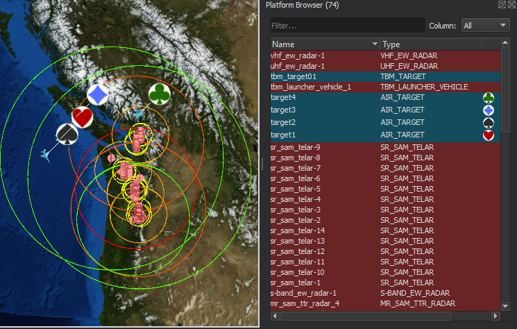
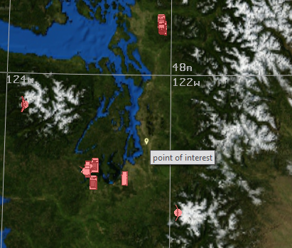
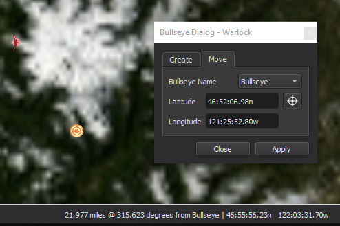
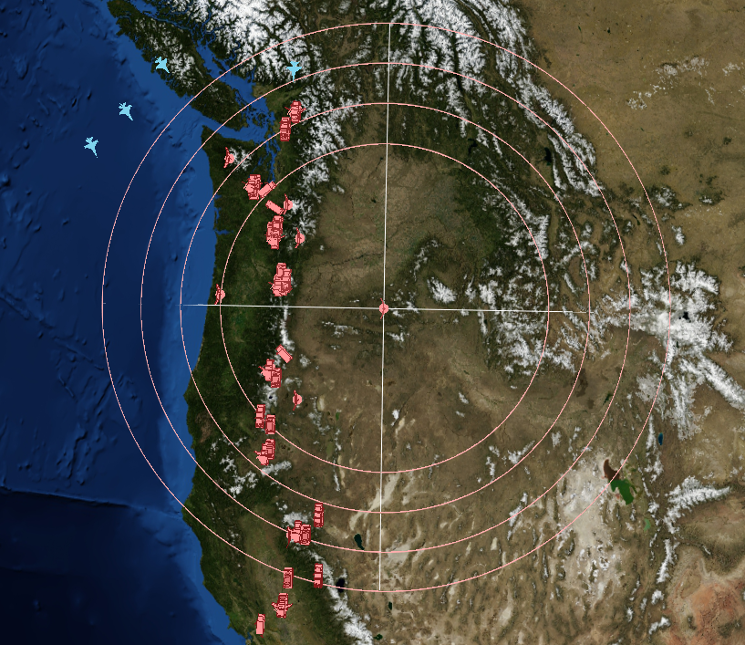
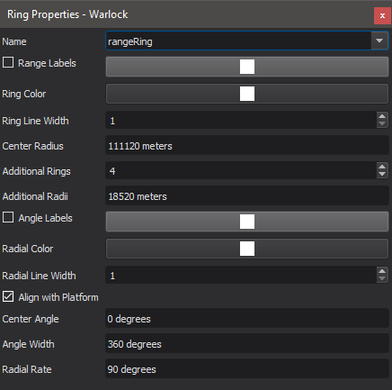
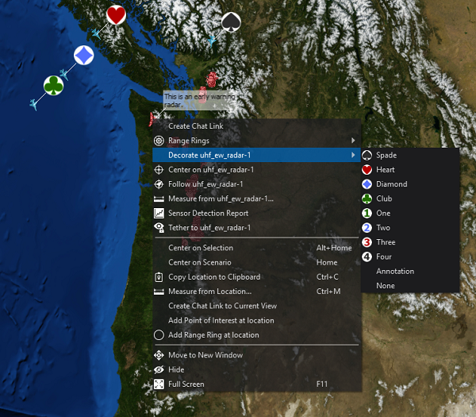
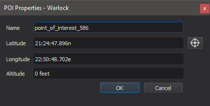
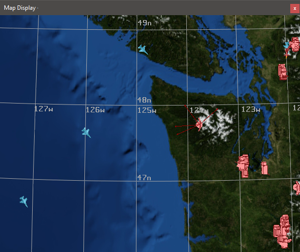
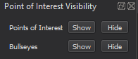

Map Annotation - Mystic¶
Map annotations are items such as points-of-interest, bullseyes, range-rings, decorations and text annotations that can be displayed on the Map Display.
Points-of-Interest¶
Points-of-Interest are small markers that may be added to the map by right-clicking at a location and selecting “Add at Location -> Point of Interest”. Points of interest may be moved by holding the Ctrl key and left-click dragging. They may be measured from using the measure tool, and range rings and annotations may be attached to them. They may be deleted by selecting with a left-click and pressing the delete key.
Bullseyes¶
Bullseyes are a special type of Point-of-Interest that have a unique icon. The range and bearing from the nearest bullseye to the cursor will be displayed next to the position display on the status bar. Bullseyes can be added to the map by right-clicking at a location and selecting “Add at Location -> Bullseye” or by using the Bullseye Dialog which can be accessed through a hotkey (default Ctrl-B). Bullseyes may be moved by left-click dragging or through the Bullseye Dialog. They may be measured from using the measure tool, and range rings and annotations may be attached to them. They may be deleted by selecting with a left-click and pressing the delete key.
Range-rings¶
Range-rings may be added to platforms, points-of-interest, and locations on the map. To add a range ring to a platform or point of interest, right click on the icon and select “Add Range Ring to…” from the Range Ring menu. To add a range ring at a location on the map, right click on the map and select “Add at Location -> Range Ring”. Range rings may be deleted by right clicking on the owning entity and selecting “Remove Range ring from…” in the range ring menu. The properties of a range-ring may be changed by selecting “Edit Range Rings on…” from the sub-menu.
|  |
|
Note
Platforms’ range-rings may be hidden and shown from the Platform Options dialog. Range rings will not be visible when the associated visibility box is unchecked.
Annotations and Decorations¶
Platforms, tracks, and points-of-interests may be decorated with icons or text by right clicking and making a selection in the “Decorate” sub-menu.
Decorations will be applied to the map view, platform browser, and any immersive views. Selecting annotate will allow for the user to attach a text label to the target, while image allows for external files (PNG or JPG format) to be loaded.
From here, text may be added to the point, or an image may be loaded.
Vectors¶
Vectors are arrows that are attached to platforms they may point to many different things.
There is a standard set of vectors that may point to:
Body Frame: The coordinate axes of the platform
Velocity: The velocity direction of the platform
Earth Nadir: The center of the earth
Sun: The direction to the sun
Moon: The direction to the moon
These vectors are enabled/disabled from the platform options, and are saved to the user preferences file.
In addition, custom vectors may be added to point to platforms, or groupings of platforms. These may be added and removed by right clicking on a platform and using the Custom Vectors submenu. These vectors may be saved and restored from a annotation file, as described below.
Pre-Defining Annotations¶
Map Annotations (excluding vectors) may be pre-defined in the scenario by using visual_elements blocks. When using wizard, adding, deleting or modifying annotations through the map display or editing dialogs will also modify them in the text editor.
Note
Having platforms and points-of-interests with the same name may cause undefined behavior. Please make sure that points-of-interest and platforms have unique names.
Annotation Visibility¶
The visibility of annotations that are attached to platforms (range rings and decorations) can be controlled via Platform Options. The visibility of points of interest and bullseyes can be globally controlled via the Point of Interest Visibility Browser.
Point Of Interest Visibility Browser¶
This browser controls the visibility of POIs and bullseyes. Alternatively, there are keyboard shortcuts available to toggle the visiblity of each type of annotation.
Note
If a POI or bullseye is visible, its attached range rings and decorations will also be visible.
Note
When adding non-platform annotations, they will often default to being visible. For example, even if all bullseyes were previously hidden, any newly created bullseyes would still be visible and would require an additional action to hide.
Exporting Annotations¶
Newly created or edited map annotations (excluding vectors) can be exported to a text file through the file menu. The exported file can then be included in a scenario and saved for later use.
Note
When exporting an edited annotation back to the original scenario, it may be necessary to remove the original annotation definition to avoid having duplicates.